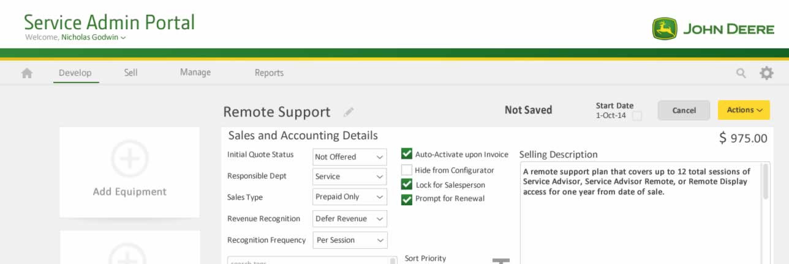
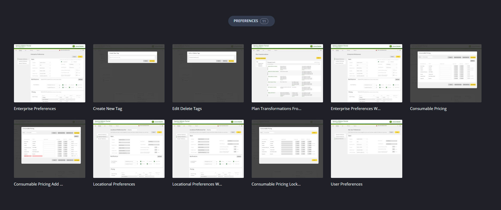
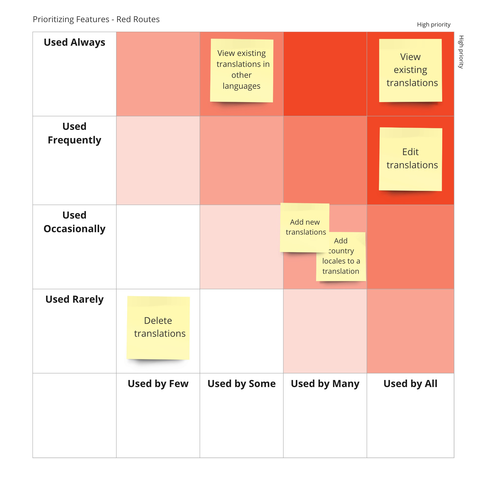
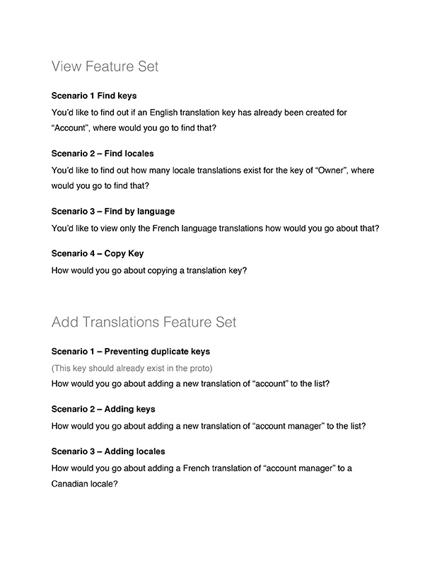
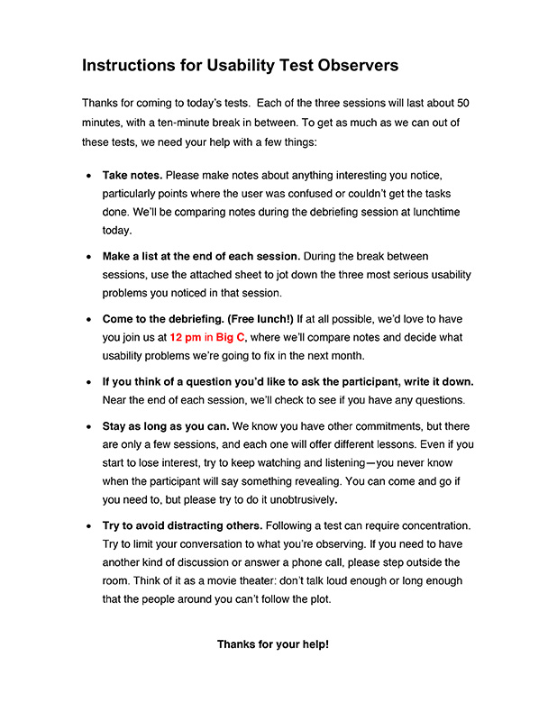
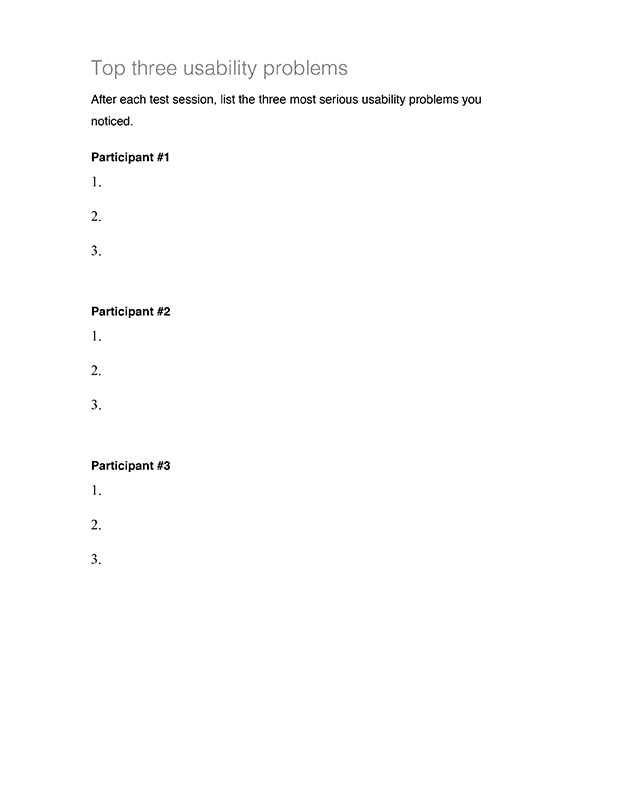
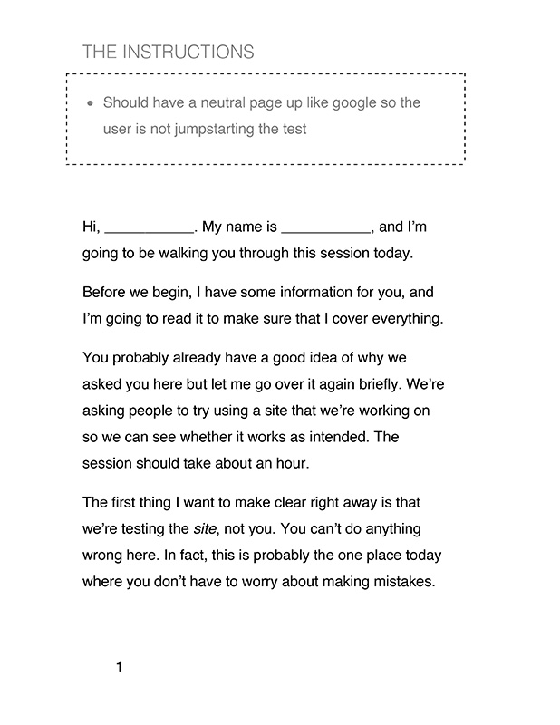

<!DOCTYPE html><html lang="en" id="top"><head><meta charset="UTF-8"/>
<meta name="viewport" content="width=device-width, initial-scale=1.0">
<meta http-equiv="X-UA-Compatible" content="IE=edge"/><title>Chris Norton: Designer</title><link rel="preconnect" href="https://fonts.googleapis.com">
<link rel="preconnect" href="https://fonts.gstatic.com" crossorigin><!--link(href='https://fonts.googleapis.com/css2?family=Open+Sans:wght@400;700&family=Source+Sans+3&display=swap', rel='stylesheet')--><link href="https://fonts.googleapis.com/css2?family=Arimo:ital,wght@0,400..700;1,400..700&amp;family=Source+Sans+3&amp;display=swap&amp;display=swap" rel="stylesheet"/><link rel="stylesheet" href="https://cdnjs.cloudflare.com/ajax/libs/font-awesome/6.5.0/css/all.min.css"/><link rel="stylesheet" href="styles/styles-2025.css"/><script src="js/polyfill.min.js"></script></head></html><body><div class="wrapper bg-light-1"><div class="page"><header class="ds-nav" id="mainNav" data-variant="light" data-sticky="true" role="banner"><div class="ds-nav__inner"><a class="ds-nav__logo" href="index.html" aria-label="Home"><span class="ds-nav__logo-wordmark">Christopher Norton</span></a><div class="ds-nav__actions"><a href="index.html">Home</a><a href="index.html#projects">Projects</a><!--a(href="#contactForm") Contact--><a class="linkedin" href="#contactForm"></a></div><button class="ds-nav__burger" id="burgerBtn" aria-label="Open menu" aria-expanded="false" aria-controls="mobileDrawer"><span></span><span></span><span></span></button></div><nav class="ds-nav__drawer" id="mobileDrawer" hidden="hidden" aria-label="Mobile navigation"><div class="ds-nav__drawer-panel" id="drawerPanelMain"><a class="ds-nav__drawer-link" href="index.html">Home</a><a class="ds-nav__drawer-link" href="index.html#projects">Projects</a><!--a.ds-nav__drawer-link(href="#contactForm") Contact//- /#drawerPanelMain
--></div><div class="ds-nav__drawer-panel" id="drawerPanelSections" hidden="hidden"><button class="ds-nav__drawer-back" id="drawerBackBtn" aria-label="Back to main menu"><svg viewBox="0 0 16 16" fill="none" aria-hidden="true"><path d="M10 3L5 8l5 5" stroke="currentColor" stroke-width="1.6" stroke-linecap="round" stroke-linejoin="round"></path></svg>Main menu</button><span class="ds-nav__drawer-eyebrow">On this page</span><div id="drawerSectionLinks"></div></div></nav></header><nav class="ds-section-nav" id="sectionNav" aria-label="Page sections"></nav><section class="bubble" data-title="Overview: Limited"><div class="content"><div class="page-nav top"><a class="back jd" href="index.html#projects"><i class="fa fa-solid fa-angle-left" aria-hidden="true"></i>Projects</a></div><h2 class="overline">John Deere</h2><p class="overline">Internal web and mobile applications</p><div class="tags"><div class="tag ux">UX</div><div class="tag ui">UI</div><div class="tag uxr">UXR</div><div class="tag redacted">Limited</div></div><p></p><p class="has-subtitle"><small>Prototype screens for a services management application with many complex process states and user privileges.</small></p><h4>Limited</h4><p>Due to the sensitive nature of the projects I worked on at John Deere, I walked away with very few visuals despite my 6 years there as a solo designer to various dev teams so you'll just have to take my word for it that I worked on <strong>6 enterprise-level</strong>, process and state-driven web and mobile applications both internal and customer-facing.</p><h6 data-title="Day to Day">Here's a few things I did during my time:</h6><ul><li>Designed customer-facing e-commerce sites for $750,000+ vehicles and machinery for agriculture, forestry, and construction.</li><li>Worked on applications and features that touched <strong>billions</strong> of dollars in sales and services.</li><li>Designed backend applications for sales staff, dealership owners, warehouse managers and staff as well as upper-level business strategists and corporate management.</li><li>Designed CTAs such as building purchase quotes, managing warranties, managing service agreements, tracking parts inventory, and scheduling availability.</li><li>Integrated department-level one-off legacy apps into flows of more current, company-wide applications to provide in-line context, consolidate backlog and update branding for consistency.</li></ul><h6>Specifically</h6><ul><li>Interviewed and established a feedback loops for stakeholders with a range of concerns and access privileges to CTAs and content.</li><li>Mapped out information architecture and created wireframes and interactive prototypes using Balsamiq, Sketch, and <strong>Figma</strong>.</li><li>Helped build a design system with branded themes for Agriculture, Forestry, Construction, and Hitachi.</li><li>Provided markup instructions and working HTML/CSS/JS prototypes for dev teams to execute flows.</li><li>Served as the secret CSS ninja troubleshooting the most complex CSS layout issues.</li><li>Performed usability and accessibility testing on prototypes and from live deployments, compiling results based on promotion success, time to complete tasks, feature adoption, ticket closure rates, and other metrics.</li></ul><h6 data-title="More Examples">Sample Planning Artifacts</h6><p></p><h6>Usability Testing Artifacts</h6><p class="usability-testing-scripts"></p><h6>Results & Analysis</h6><p></p><div class="page-nav bottom"><a class="back jd" href="index.html#projects"><i class="fa fa-solid fa-angle-left" aria-hidden="true"></i>Projects</a></div></div></section></div></div></body>